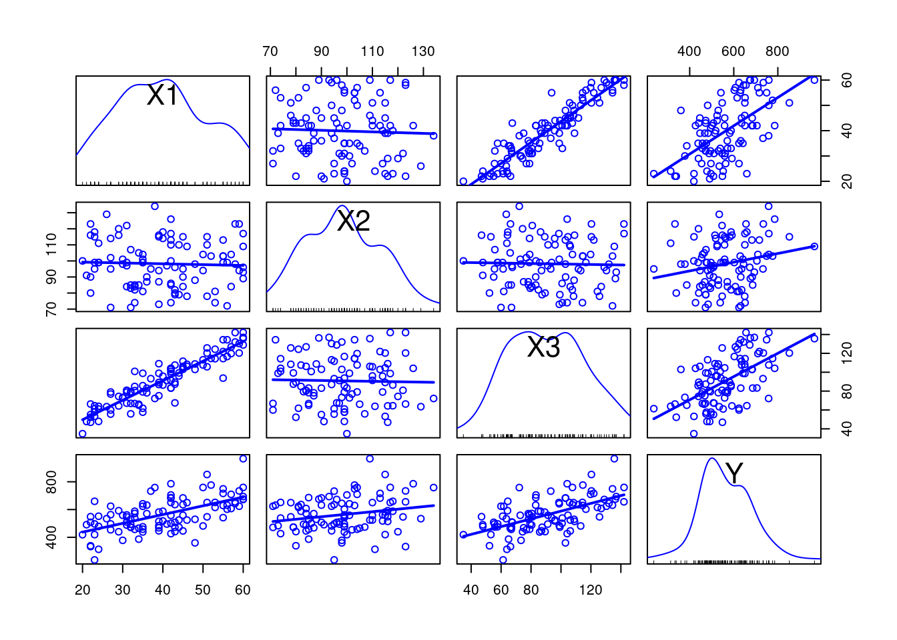
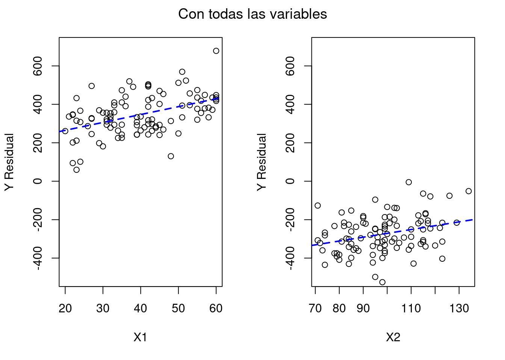
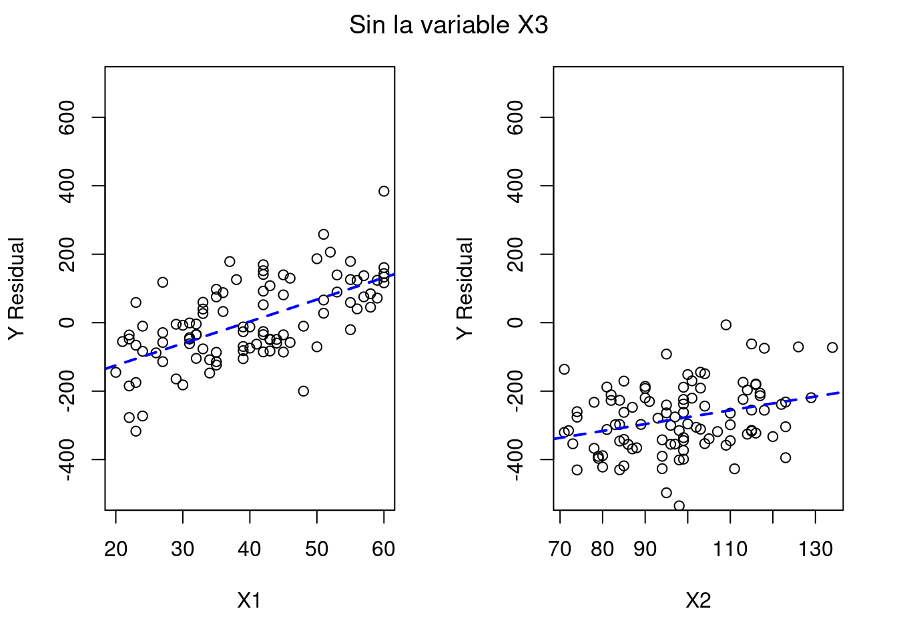
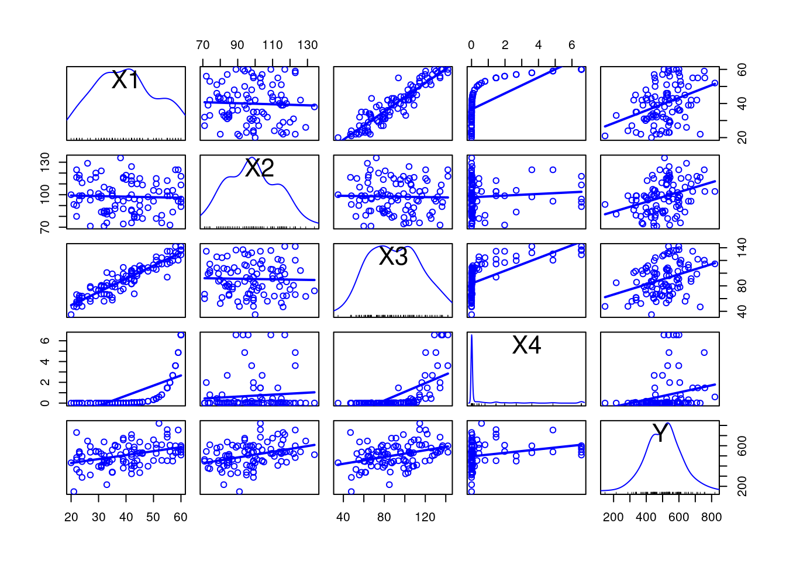

La multicolinealidad es un problema que surge habitualmente en los modelos de regresión lineal múltiple. Esta cuestión ha ocupado mucha literatura, lo que se pretende es resumir de una manera clara qué significa, cuál es su impacto y qué se puede hacer para paliar su efecto. Desde una óptica metodológica puede surgir, entre otras, por estas razones:
Las variables explicativas seleccionadas están relacionadas entre sí
Se ha llevado a cabo una suma de dos variables explicativas sin darse cuenta (habitual por ejemplo en test si se suman dos ítems o subescalas y se usan tanto la suma como los elementos sumados)
Se ha usado varias escalas o medidas para un mismo constructo
Hay más variables que observaciones o el modelo teórico específico incluye variables relacionadas
Lo que comparte toda multicolinealidad es que existe una relación múltiple entre varias variables explicativas, lo que implica que el modelo planteado no cumple los supuestos para realizar una correcta interpretación de los resultados en el caso de los modelos de regresión lineal (y en sus derivados). En algunos casos, como ocurre con LISREL (Holgado Tello, Suárez Falcón, and Morata Ramírez 2019), la multicolinealidad impide realizar los cálculos puesto que la matriz de covarianza no está definida de manera positiva; en otras ocasiones los programas mostrarán resultados pero habrá problemas como una alta variabilidad en los estimadores, sensibilidad a cambios pequeños en los datos o magnitudes y signos poco razonables de las estimaciones del Valle Moreno and Guerra Bustillo (2012).
Para este trabajo se simulará una serie de datos (siempre es más fácil de explicar con datos que responden estrictamente a lo que se pretende) en los que haya una serie de variables predictoras nombradas como \(X_1\), \(X_2\), etc. y una variable dependiente \(Y\), según la ecuación \(Y = 2X_1 + 3X_2 + X_3 + \epsilon\), donde \(\epsilon\) es un error aleatorio. Todo el código se moverá en R.
set.seed(2025)
x1 <- sample(20:60, 100, replace = T) # Edad en años
x2 <- round(rnorm(100, 100, 15)) # Resultados en un test
x3 <- x1 * 2 + rnorm(100, 10, 10) # Variable relacionada con la edad
y <- 2 * x1 + 3 * x2 + x3 + rnorm(100, 100, 100) # Variable dependiente
datos <- tibble::tibble(X1 = x1, X2 = x2, X3 = x3, Y = y)
car::scatterplotMatrix(datos, smooth = F, regLine = T)
Como se ve en las gráficas, es fácil ver cómo X3 y X1 están relacionadas de una manera lineal muy concreta. Este indicador ya es en sí mismo una alerta para la colinealidad. Como es lógico, la correlación también será alta, especialmente teniendo en cuenta que los métodos de cálculo capturan la relación lineal.
## X1 X2 X3
## X1 1.00 -0.040 0.927
## X2 -0.04 1.000 -0.026
## X3 0.93 -0.026 1.000El método numérico más usado para el cálculo de la multicolinealidad es la Inflación de Varianza (VIF por sus siglas en inglés), que responde a la ecuación \(VIF_i = \frac{1}{1 - R^2_i}\). Como se deduce del propio nombre, el cálculo involucra cuánto cambia la explicación de la varianza de un modelo al cambiar las variables predictoras o explicativas. En el caso del ejemplo, usando el paquete car, se obtiene:
## X1 X2 X3
## 7.1 1.0 7.1Lo cual indica una alta colinealidad de X1 y X3 (como era obvio). Los valores VIF mayores a 5 siempre nos deben hacer sospechar de problemas de colinealidad y cuando son mayores a 10 el error introducido en el modelo puede tener mucho impacto. Para entender el impacto sobre el modelo se debe eliminar la variable independiente sobre la que se tenga sospecha de estar relacionada con otra. En este caso será X3, pero aquí es dónde entra en juego la decisión del investigador: cuando se vean dos variables independientes relacionadas hay que decidir, por modelo teórico o por lógica, cuál es la que puede tener un efecto en la investigación y cuál simplemente está relacionada con ésta. En ciertos casos será más evidente (por ejemplo, si una variable es edad y otra renta, es esperable que la renta aumente con la edad), en otros habrá que buscar más evidencia a favor y en contra de cada variable.
## Estimate Std. Error t value Pr(>|t|)
## (Intercept) 102.5 72.66 1.4 0.1614
## X1 4.0 2.20 1.8 0.0703
## X2 2.0 0.64 3.1 0.0023
## X3 1.1 0.99 1.2 0.2461## Estimate Std. Error t value Pr(>|t|)
## (Intercept) 109.8 72.53 1.5 1.3e-01
## X1 6.4 0.83 7.7 9.3e-12
## X2 2.0 0.64 3.2 2.1e-03En el modelo2 sendas variables X1 y X2 se pueden considerar relevantes, mientras que en el primer modelo solo X2 muestra evidencia. Curiosamente sabemos que la variable Y sigue una ecuación concreta en la que participan las 3 variables de cierta manera y es el término de error el que introduce la distorsión que termina por modificar la ecuación del modelo.

En los ajustes de las regresiones se ve el impacto que tiene sacar X3 del modelo matemático sobre el ajuste de X1, mientras que X2 mantiene prácticamente sus valores. Aquí reside uno de los principales problemas prácticos de la multicolinealidad: el ajuste de las variables no es fiable, aumenta los errores estándar y el valor del estimador no es preciso.
Hay que tener en cuenta que la correlación y la inflación de varianza no son efectivos cuando la relación entre variables no es lineal. Por ejemplo, si una variable \(X_4\) tiene una relación exponencial que sigue la ecuación \(X_4 = e^{\frac{3X_1}{10}}/10^{7}\) (para mantener los números en un orden aceptable para la regresión lineal), la inflación de varianza para la variable \(X_4\) es menor a 5, incluso está en un límite aceptable según los criterios VIF más usados. En este caso la correlación lineal es de \(0,68\) por puro artefacto matemático, detalle que se ve más claro en la gráfica de dispersión.
set.seed(2025)
x4 <- exp(3*x1/10) / 1e7
datos$X4 <- x4
datos$Y <- 3 * datos$X1 + 2 * datos$X2 + datos$X3 + datos$X4 + rnorm(100, 100, 100)
datos <- datos |> dplyr::select(X1, X2, X3, X4, Y)
modelo3 <- lm(data = datos, Y ~ X1 + X2 + X3 + X4)
print(car::vif(modelo3), digits = 2)## X1 X2 X3 X4
## 7.7 1.0 7.1 1.9## X1 X2 X3 X4
## X1 1.00 -0.040 0.927 0.675
## X2 -0.04 1.000 -0.026 0.084
## X3 0.93 -0.026 1.000 0.646
## X4 0.68 0.084 0.646 1.000
En la gráfica, sin embargo, se observa cómo esa correlación exponencial tiene un impacto importante en el modelo. Aunque el tratamiento de variables exponenciales no es el objetivo de esta entrada, se puede ver cómo afecta también a los coeficientes del modelo.
## Estimate Std. Error t value Pr(>|t|)
## (Intercept) 23.23 86.67 0.27 7.9e-01
## X1 4.06 2.46 1.65 1.0e-01
## X2 3.02 0.69 4.37 3.2e-05
## X3 0.33 1.06 0.31 7.5e-01
## X4 -7.24 8.46 -0.86 3.9e-01Y a su \(R^2\).
## [1] 0.2890348Como es habitual en la metodología de investigación, el tratamiento de las variables multicolineales depende del objetivo de la investigación, del modelo teórico y de cómo se han obtenido los datos. Si, como en el ejemplo, se puede intuir o saber que una variable puede estar relacionada con otra de una manera lógica o apoyada en la evidencia, se puede eliminar la variable que sea menos relevante para el modelo teórico. Sin embargo, esto es un caso particular y seguramente ideal, puesto que el Modelo Lineal General, del que surgen estos conceptos, se aplica en multitud de circunstancias, no siempre de una manera evidente para el investigador. Es el caso, por ejemplo, de los análisis multigrupo con variables categóricos. En estos enfoques aún es más importante el discernimiento entre los efectos y las interacciones de tipo colineal entre las variables.
Cuando no se quiere o no se puede eliminar o controlar las variables colineales, el enfoque estadístico puede virar hacia una regularización de los efectos. Estos enfoques, aunque cada uno con sus peculiaridades, incorporan penalizaciones en el ajuste de Mínimos Cuadrados Ordinarios (MCO u OLS en inglés) que se usa en las regresiones lineales habituales. El paso previo al uso de estas estrategias es la estandarización o normalización de los predictores, puesto que necesitan hallarse en la misma escala para no incorporar sesgos aún mayores.
Penaliza la suma de coeficientes elevados sin llegar a convertirlos en 0, minimizando la función:
\[\sum (y_i - \bar{y_i})^2 + \lambda \sum \beta_j^2\]
Por un lado, el primer término corresponde a la aproximación de mínimos cuadrados ordinarios mientras que la segunda es la penalización por coeficiente. Variando el valor de \(\lambda\) se obtienen diferentes ecuaciones de regresión, pero existe un valor mínimo óptimo que puede ser calculado de manera sencilla en R.
Para empezar, se deben estandarizar los valores a valores normales
con media 0 y desviación típica de 1, pero la función
glmnet::glmnet() del paquete glmnet estandariza
automáticamente los valores, a no ser que se le indique lo contrario. Al
indicar alpha = 0 se calcula la regresión ridge, indicando alpha = 1 se
realizaría una regresión LASSO. Para saber qué coeficiente lambda se
debe elegir, se puede usar la función
glmnet::cv.glmnet().
set.seed(2025)
XRidge <- model.matrix(~., datos[,1:3]) # Se convierten los datos en un objeto de términos apropiado
lambda_minima <- glmnet::cv.glmnet(XRidge, datos$Y, alpha = 0)$lambda.min
ridge <- glmnet::glmnet(XRidge, datos$Y, alpha = 0, lambda = lambda_minima)
coef(ridge)## 5 x 1 sparse Matrix of class "dgCMatrix"
## s0
## (Intercept) 99.6037027
## (Intercept) .
## X1 2.4265803
## X2 2.5853006
## X3 0.6255277Con esta regresión el modelo que reduce la colinealidad es \(Y = 99,60 + 2,43 X_1 + 2,59X_2 + 0,63X_3\), no muy lejos de la ecuación original. Se ve cómo aumenta el término de \(X_1\) y disminuye el de \(X_3\) ligeramente debido a la colinealidad.
Este enfoque permite mantener todas las variables que se crean relevantes en el modelo, mientras que en el método LASSO selecciona las variables según criterios estadísticos, por lo que puede alejar el modelo de la teoría y se debería usar con mayor precaución, teniendo en cuenta otras alternativas de reducción de dimensionalidad. Pero eso es otro tema…